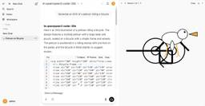
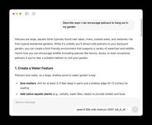
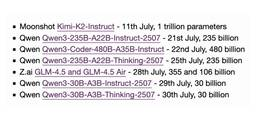
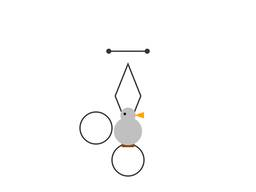
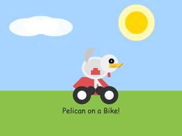

Simon Willison's Weblog
フィード

Faster inference
Simon Willison's Weblog
<p>Two interesting examples of inference speed as a flagship feature of LLM services today.</p><p>First, Cerebras <a href="https://www.cerebras.ai/blog/introducing-cerebras-code">announced two new monthly plans</a> for their extremely high speed hosted model service: Cerebras Code Pro ($50/month, 1,000 messages a day) and Cerebras Code Max ($200/month, 5,000/day). The model they are selling here is Qwen's Qwen3-Coder-480B-A35B-Instruct, likely the best available open weights coding model right now and one that was released <a href="https://simonwillison.net/2025/Jul/22/qwen3-coder/">just ten days ago</a>. Ten days from model release to third-party subscription service feels like some kind of record.</p><p>Cerebras claim they can serve the model at an astonishing 2,000 tokens per second - four times the speed of Claude Sonnet 4 in <a href="https://x.com/cerebrassystems/status/1951340566077440464">their demo video</a>.</p><p>Also today, Moonshot <a href="https://x.com/kimi_moonshot/stat
16時間前
Deep Think in the Gemini app
Simon Willison's Weblog
<p><strong><a href="https://blog.google/products/gemini/gemini-2-5-deep-think/">Deep Think in the Gemini app</a></strong></p>Google released Gemini 2.5 Deep Think this morning, exclusively to their Ultra ($250/month) subscribers:</p><blockquote><p>It is a variation of the model that <a href="https://deepmind.google/discover/blog/advanced-version-of-gemini-with-deep-think-officially-achieves-gold-medal-standard-at-the-international-mathematical-olympiad/">recently achieved</a> the gold-medal standard at this year's International Mathematical Olympiad (IMO). While that model takes hours to reason about complex math problems, today's release is faster and more usable day-to-day, while still reaching Bronze-level performance on the 2025 IMO benchmark, based on internal evaluations.</p></blockquote><p>Google describe Deep Think's architecture like this:</p><blockquote><p>Just as people tackle complex problems by taking the time to explore different angles, weigh potential solutions, and re
1日前
July newsletter for sponsors is out
Simon Willison's Weblog
<p>This morning I sent out the third edition of my LLM digest newsletter for my $10/month and higher <a href="https://github.com/sponsors/simonw">sponsors on GitHub</a>. It included the following section headers:</p><ul><li>Claude Code</li><li>Model releases in July</li><li>Gold medal performances in the IMO</li><li>Reverse engineering system prompts</li><li>Tools I'm using at the moment</li></ul><p>The newsletter is a condensed summary of highlights from the past month of my blog. I published <a href="https://simonwillison.net/2025/Jul/">98 posts in July</a> - the concept for the newsletter is that you can pay me for the version that only takes 10 minutes to read!</p><p>Here are the newsletters I sent out for <a href="https://gist.github.com/simonw/de3e12de506c9a3df4e1119b842e79f7">June 2025</a> and <a href="https://gist.github.com/simonw/07eb3f32bad5b9f21b4e65f86327e302">May 2025</a>, if you want a taste of what you'll be getting as a sponsor. New sponsors instantly get access to th
1日前
Quoting Logan Kilpatrick
Simon Willison's Weblog
<blockquote cite="https://x.com/OfficialLoganK/status/1951262261512659430"><p>Gemini Deep Think, our SOTA model with parallel thinking that won the IMO Gold Medal 🥇, is now available in the Gemini App for Ultra subscribers!! [...]</p><p>Quick correction: this is a variation of our IMO gold model that is faster and more optimized for daily use! We are also giving the IMO gold full model to a set of mathematicians to test the value of the full capabilities.</p></blockquote><p class="cite">— <a href="https://x.com/OfficialLoganK/status/1951262261512659430">Logan Kilpatrick</a>, announcing Gemini Deep Think</p> <p>Tags: <a href="https://simonwillison.net/tags/gemini">gemini</a>, <a href="https://simonwillison.net/tags/logan-kilpatrick">logan-kilpatrick</a>, <a href="https://simonwillison.net/tags/llm-reasoning">llm-reasoning</a>, <a href="https://simonwillison.net/tags/ai">ai</a>, <a href="https://simonwillison.net/tags/llms">llms</a>, <a href="https://simonwillison.net/tags/llm-re...
1日前
Reverse engineering some updates to Claude
Simon Willison's Weblog
<p>Anthropic released two major new features for their consumer-facing Claude apps in the past couple of days. Sadly, they don't do a very good job of updating the <a href="https://docs.anthropic.com/en/release-notes/claude-apps">release notes</a> for those apps - neither of these releases came with any documentation at all beyond short announcements on Twitter. I had to reverse engineer them to figure out what they could do and how they worked!</p><p>Here are the two tweets. Click the links to see the videos that accompanied each announcement:</p><blockquote><p>New on mobile: Draft and send emails, messages, and calendar invites directly from the Claude app.</p></blockquote><p><a href="https://x.com/AnthropicAI/status/1950590543370834335">@AnthropicAI, 30th July 2025</a></p><blockquote><p>Claude artifacts are now even better.</p><p>Upload PDFs, images, code files, and more to AI-powered apps that work with your data.</p></blockquote><p><a href="https://x.com/AnthropicAI/status/195103
2日前
Quoting Christina Wodtke
Simon Willison's Weblog
<blockquote cite="https://www.linkedin.com/posts/christinawodtke_the-old-timers-who-built-the-early-web-are-activity-7356335847614402560-8nKx/"><p>The old timers who built the early web are coding with AI like it's 1995. </p><p>Think about it: They gave blockchain the sniff test and walked away. Ignored crypto (and yeah, we're not rich now). NFTs got a collective eye roll.</p><p>But AI? Different story. The same folks who hand-coded HTML while listening to dial-up modems sing are now vibe-coding with the kids. Building things. Breaking things. Giddy about it.</p><p>We Gen X'ers have seen enough gold rushes to know the real thing. This one's got all the usual crap—bad actors, inflated claims, VCs throwing money at anything with "AI" in the pitch deck. Gross behavior all around. Normal for a paradigm shift, but still gross.</p><p>The people who helped wire up the internet recognize what's happening. When the folks who've been through every tech cycle since gopher start acting like excit
2日前
More model releases on 31st July
Simon Willison's Weblog
<p>Here are a few more model releases from today, to round out a <a href="https://simonwillison.net/search/?tag=llm-release&year=2025&month=7">very busy July</a>:</p><ul><li>Cohere <a href="https://cohere.com/blog/command-a-vision">released Command A Vision</a>, their first multi-modal (image input) LLM. Like their others it's open weights under Creative Commons Attribution Non-Commercial, so you need to license it (or use their paid API) if you want to use it commercially.</li><li>San Francisco AI startup Deep Cogito released <a href="https://www.deepcogito.com/research/cogito-v2-preview">four open weights hybrid reasoning models</a>, cogito-v2-preview-deepseek-671B-MoE, cogito-v2-preview-llama-405B, cogito-v2-preview-llama-109B-MoE and cogito-v2-preview-llama-70B. These follow their <a href="https://www.deepcogito.com/research/cogito-v1-preview">v1 preview models</a> in April at smaller 3B, 8B, 14B, 32B and 70B sizes. It looks like their unique contribution here is "distilli
2日前

Trying out Qwen3 Coder Flash using LM Studio and Open WebUI and LLM
Simon Willison's Weblog
<p>Qwen just released <a href="https://simonwillison.net/2025/Jul/30/chinese-models/">their sixth model</a>(!) of this July called <a href="https://huggingface.co/Qwen/Qwen3-Coder-30B-A3B-Instruct">Qwen3-Coder-30B-A3B-Instruct</a> - listed as Qwen3-Coder-Flash in their <a href="https://chat.qwen.ai/">chat.qwen.ai</a> interface.</p><p>It's 30.5B total parameters with 3.3B active at any one time. This means it will fit on a 64GB Mac - and even a 32GB Mac if you quantize it - and can run <em>really</em> fast thanks to that smaller set of active parameters.</p><p>It's a non-thinking model that is specially trained for coding tasks.</p><p>This is an exciting combination of properties: optimized for coding performance and speed and small enough to run on a mid-tier developer laptop.</p><h4 id="trying-it-out-with-lm-studio-and-open-webui">Trying it out with LM Studio and Open WebUI</h4><p>I like running models like this using Apple's MLX framework. I ran GLM-4.5 Air the other day <a href="ht
2日前

Ollama's new app
Simon Willison's Weblog
<p><strong><a href="https://ollama.com/blog/new-app">Ollama's new app</a></strong></p>Ollama has been one of my favorite ways to run local models for a while - it makes it really easy to download models, and it's smart about keeping them resident in memory while they are being used and then cleaning them out after they stop receiving traffic.</p><p>The one missing feature to date has been an interface: Ollama has been exclusively command-line, which is fine for the CLI literate among us and not much use for everyone else.</p><p>They've finally fixed that! The new app's interface is accessible from the existing system tray menu and lets you chat with any of your installed models. Vision models can accept images through the new interface as well.</p><p><img alt="Screenshot of a chat interface showing a response about encouraging pelicans in a garden. The prompt reads "Describe ways I can encourage pelicans to hang out in my garden" followed by the response: "Pelicans
3日前
Quoting Steve Krouse
Simon Willison's Weblog
<blockquote cite="https://blog.val.town/vibe-code"><p>When you vibe code, you are incurring tech debt as fast as the LLM can spit it out. Which is why vibe coding is <em>perfect</em> for prototypes and throwaway projects: It's only legacy code if you have to maintain it! [...]</p><p>The worst possible situation is to have a non-programmer vibe code a large project that they intend to maintain. This would be the equivalent of giving a credit card to a child without first explaining the concept of debt. [...]</p><p>If you don't understand the code, your only recourse is to ask AI to fix it for you, which is like paying off credit card debt with another credit card.</p></blockquote><p class="cite">— <a href="https://blog.val.town/vibe-code">Steve Krouse</a>, Vibe code is legacy code</p> <p>Tags: <a href="https://simonwillison.net/tags/vibe-coding">vibe-coding</a>, <a href="https://simonwillison.net/tags/ai-assisted-programming">ai-assisted-programming</a>, <a href="https://sim
3日前

The best available open weight LLMs now come from China
Simon Willison's Weblog
<p>Something that has become undeniable this month is that the best available open weight models now come from the Chinese AI labs.</p><p>I continue to have a lot of love for Mistral, Gemma and Llama but my feeling is that Qwen, Moonshot and Z.ai have positively <em>smoked them</em> over the course of July.</p><p>Here's what came out this month, with links to my notes on each one:</p><ul><li>Moonshot <a href="https://simonwillison.net/2025/Jul/11/kimi-k2/">Kimi-K2-Instruct</a> - 11th July, 1 trillion parameters</li><li>Qwen <a href="https://simonwillison.net/2025/Jul/22/qwen3-235b-a22b-instruct-2507/">Qwen3-235B-A22B-Instruct-2507</a> - 21st July, 235 billion</li><li>Qwen <a href="https://simonwillison.net/2025/Jul/22/qwen3-coder/">Qwen3-Coder-480B-A35B-Instruct</a> - 22nd July, 480 billion</li><li>Qwen <a href="https://simonwillison.net/2025/Jul/25/qwen3-235b-a22b-thinking-2507/">Qwen3-235B-A22B-Thinking-2507</a> - 25th July, 235 billion</li><li>Z.ai <a href="https://simonwillison.ne
3日前

Qwen3-30B-A3B-Thinking-2507
Simon Willison's Weblog
<p><strong><a href="https://huggingface.co/Qwen/Qwen3-30B-A3B-Thinking-2507">Qwen3-30B-A3B-Thinking-2507</a></strong></p>Yesterday was <a href="https://simonwillison.net/2025/Jul/29/qwen3-30b-a3b-instruct-2507/">Qwen3-30B-A3B-Instruct-2507</a>. Qwen are clearly committed to their new split between reasoning and non-reasoning models (a reversal from Qwen 3 in April), because today they released the new reasoning partner to yesterday's model: <strong>Qwen3-30B-A3B-Thinking-2507</strong>.</p><p>I'm surprised at how poorly this reasoning mode performs at "Generate an SVG of a pelican riding a bicycle" compared to its non-reasoning partner. The <a href="https://gist.github.com/simonw/b523c029152f646ce4efb3c4dd5e1d01#reasoning">reasoning trace</a> appears to carefully consider each component and how it should be positioned... and then <a href="https://gist.github.com/simonw/b523c029152f646ce4efb3c4dd5e1d01#response">the final result</a> looks like this:</p><p><img alt="A line with two dots,
3日前
OpenAI: Introducing study mode
Simon Willison's Weblog
<p><strong><a href="https://openai.com/index/chatgpt-study-mode/">OpenAI: Introducing study mode</a></strong></p>New ChatGPT feature, which can be triggered by typing <code>/study</code> or by visiting <a href="https://chatgpt.com/studymode">chatgpt.com/studymode</a>. OpenAI say:</p><blockquote><p>Under the hood, study mode is powered by custom system instructions we’ve written in collaboration with teachers, scientists, and pedagogy experts to reflect a core set of behaviors that support deeper learning including: encouraging active participation, managing cognitive load, proactively developing metacognition and self reflection, fostering curiosity, and providing actionable and supportive feedback.</p></blockquote><p>Thankfully OpenAI mostly don't seem to try to prevent their system prompts from being revealed these days. I tried a few approaches and got back the same result from each one so I think I've got the real prompt - here's <a href="https://chatgpt.com/share/68891e52-8f38-
4日前

Qwen3-30B-A3B-Instruct-2507
Simon Willison's Weblog
<p><strong><a href="https://huggingface.co/Qwen/Qwen3-30B-A3B-Instruct-2507">Qwen3-30B-A3B-Instruct-2507</a></strong></p>New model update from Qwen, improving on their previous <a href="https://simonwillison.net/2025/Apr/29/qwen-3/">Qwen3-30B-A3B release</a> from late April. In <a href="https://x.com/Alibaba_Qwen/status/1950227114793586867">their tweet</a> they said:</p><blockquote><p>Smarter, faster, and local deployment-friendly.</p><p>✨ Key Enhancements:<br>✅ Enhanced reasoning, coding, and math skills<br>✅ Broader multilingual knowledge<br>✅ Improved long-context understanding (up to 256K tokens)<br>✅ Better alignment with user intent and open-ended tasks<br>✅ No more <code><think></code> blocks — now operating exclusively in non-thinking mode<br></p><p>🔧 With 3B activated parameters, it's approaching the performance of GPT-4o and Qwen3-235B-A22B Non-Thinking</p></blockquote><p>I tried <a href="https://chat.qwen.ai/?model=Qwen3-30B-A3B-2507">the chat.qwen.ai</a> hosted mode...
4日前
Quoting Nilay Patel
Simon Willison's Weblog
<blockquote cite="https://bsky.app/profile/reckless.bsky.social/post/3lv4l3xfatc2n"><p>Our plan is to build direct traffic to our site. and newsletters just one kind of direct traffic in the end. I don’t intend to ever rely on someone else’s distribution ever again ;)</p></blockquote><p class="cite">— <a href="https://bsky.app/profile/reckless.bsky.social/post/3lv4l3xfatc2n">Nilay Patel</a>, on The Verge's new newsletter strategy</p> <p>Tags: <a href="https://simonwillison.net/tags/nilay-patel">nilay-patel</a>, <a href="https://simonwillison.net/tags/journalism">journalism</a>, <a href="https://simonwillison.net/tags/email">email</a></p>
4日前
My 2.5 year old laptop can write Space Invaders in JavaScript now, using GLM-4.5 Air and MLX
Simon Willison's Weblog
<p>I wrote about the new <a href="https://simonwillison.net/2025/Jul/28/glm-45/">GLM-4.5</a> model family yesterday - new open weight (MIT licensed) models from <a href="https://z.ai/">Z.ai</a> in China which their benchmarks claim score highly in coding even against models such as Claude Sonnet 4.</p><p>The models are pretty big - the smaller GLM-4.5 Air model is still 106 billion total parameters, which <a href="https://huggingface.co/zai-org/GLM-4.5-Air">is 205.78GB</a> on Hugging Face.</p><p>Ivan Fioravanti <a href="https://x.com/ivanfioravanti/status/1949911755028910557">built</a> this <a href="https://huggingface.co/mlx-community/GLM-4.5-Air-3bit">44GB 3bit quantized version for MLX</a>, specifically sized so people with 64GB machines could have a chance of running it. I tried it out... and it works <em>extremely well</em>.</p><p>I fed it the following prompt:</p><blockquote><p><code>Write an HTML and JavaScript page implementing space invaders</code></p></blockquote><p>And it c
4日前
Quoting Anthropic
Simon Willison's Weblog
<blockquote cite="https://x.com/anthropicai/status/1949898511287226425"><p>We’re rolling out new weekly rate limits for Claude Pro and Max in late August. We estimate they’ll apply to less than 5% of subscribers based on current usage. [...]</p><p>Some of the biggest Claude Code fans are running it continuously in the background, 24/7.</p><p>These uses are remarkable and we want to enable them. But a few outlying cases are very costly to support. For example, one user consumed tens of thousands in model usage on a $200 plan.</p></blockquote><p class="cite">— <a href="https://x.com/anthropicai/status/1949898511287226425">Anthropic</a></p> <p>Tags: <a href="https://simonwillison.net/tags/anthropic">anthropic</a>, <a href="https://simonwillison.net/tags/claude-code">claude-code</a>, <a href="https://simonwillison.net/tags/llm-pricing">llm-pricing</a>, <a href="https://simonwillison.net/tags/generative-ai">generative-ai</a>, <a href="https://simonwillison.net/tags/ai">ai</a>, <a hre
5日前
GLM-4.5: Reasoning, Coding, and Agentic Abililties
Simon Willison's Weblog
<p><strong><a href="https://z.ai/blog/glm-4.5">GLM-4.5: Reasoning, Coding, and Agentic Abililties</a></strong></p>Another day, another significant new open weight model release from a Chinese frontier AI lab.</p><p>This time it's Z.ai - who rebranded (at least in English) from <a href="https://en.wikipedia.org/wiki/Zhipu_AI">Zhipu AI</a> a few months ago. They just dropped <a href="https://huggingface.co/zai-org/GLM-4.5-Base">GLM-4.5-Base</a>, <a href="https://huggingface.co/zai-org/GLM-4.5">GLM-4.5</a> and <a href="https://huggingface.co/zai-org/GLM-4.5-Air">GLM-4.5 Air</a> on Hugging Face, all under an MIT license.</p><p>These are MoE hybrid reasoning models with thinking and non-thinking modes, similar to Qwen 3. GLM-4.5 is 355 billion total parameters with 32 billion active, GLM-4.5-Air is 106 billion total parameters and 12 billion active.</p><p>They started using MIT a few months ago for their <a href="https://huggingface.co/collections/zai-org/glm-4-0414-67f3cbcb34dd9d252707cb2
5日前
The many, many, many JavaScript runtimes of the last decade
Simon Willison's Weblog
<p><strong><a href="https://buttondown.com/whatever_jamie/archive/the-many-many-many-javascript-runtimes-of-the-last-decade/">The many, many, many JavaScript runtimes of the last decade</a></strong></p>Extraordinary piece of writing by Jamie Birch who spent over a year putting together this comprehensive reference to JavaScript runtimes. It covers everything from Node.js, Deno, Electron, AWS Lambda, Cloudflare Workers and Bun all the way to much smaller projects idea like dukluv and txiki.js. <p><small></small>Via <a href="https://news.ycombinator.com/item?id=44701574">Hacker News</a></small></p> <p>Tags: <a href="https://simonwillison.net/tags/javascript">javascript</a>, <a href="https://simonwillison.net/tags/nodejs">nodejs</a>, <a href="https://simonwillison.net/tags/deno">deno</a></p>
6日前
TIL: Exception.add_note
Simon Willison's Weblog
<p><strong><a href="https://daniel.feldroy.com/posts/til-2025-05-exception-add_note">TIL: Exception.add_note</a></strong></p>Neat tip from Danny Roy Greenfeld: Python 3.11 added a <code>.add_note(message: str)</code> method to the <code>BaseException</code> class, which means you can add one or more extra notes to any Python exception and they'll be displayed in the stacktrace!</p><p>Here's <a href="https://peps.python.org/pep-0678/">PEP 678 – Enriching Exceptions with Notes</a> by Zac Hatfield-Dodds proposing the new feature back in 2021. <p><small></small>Via <a href="https://lobste.rs/s/jqm47i/til_exception_add_note">Lobste.rs</a></small></p> <p>Tags: <a href="https://simonwillison.net/tags/debugging">debugging</a>, <a href="https://simonwillison.net/tags/python">python</a></p>
6日前
Enough AI copilots! We need AI HUDs
Simon Willison's Weblog
<p><strong><a href="https://www.geoffreylitt.com/2025/07/27/enough-ai-copilots-we-need-ai-huds">Enough AI copilots! We need AI HUDs</a></strong></p>Geoffrey Litt compares Copilots - AI assistants that you engage in dialog with and work with you to complete a task - with HUDs, Head-Up Displays, which enhance your working environment in less intrusive ways.</p><p>He uses spellcheck as an obvious example, providing underlines for incorrectly spelt words, and then suggests his <a href="https://www.geoffreylitt.com/2024/12/22/making-programming-more-fun-with-an-ai-generated-debugger">AI-implemented custom debugging UI</a> as a more ambitious implementation of that pattern.</p><p>Plenty of people have expressed interest in LLM-backed interfaces that go beyond chat or editor autocomplete. I think HUDs offer a really interesting way to frame one approach to that design challenge. <p>Tags: <a href="https://simonwillison.net/tags/design">design</a>, <a href="https://simonwillison.net/tags/desig
6日前
Official statement from Tea on their data leak
Simon Willison's Weblog
<p><strong><a href="https://www.teaforwomen.com/cyberincident">Official statement from Tea on their data leak</a></strong></p>Tea is a dating safety app for women that lets them share notes about potential dates. The other day it was subject to a truly egregious data leak caused by a legacy unprotected Firebase cloud storage bucket:</p><blockquote><p>A legacy data storage system was compromised, resulting in unauthorized access to a dataset from prior to February 2024. This dataset includes approximately 72,000 images, including approximately 13,000 selfies and photo identification submitted by users during account verification and approximately 59,000 images publicly viewable in the app from posts, comments and direct messages.</p></blockquote><p>Storing and then failing to secure photos of driving licenses is an incredible breach of trust. Many of those photos included EXIF location information too, so there are maps of Tea users floating around the darker corners of the web now.</p
7日前

Qwen3-235B-A22B-Thinking-2507
Simon Willison's Weblog
<p><strong><a href="https://huggingface.co/Qwen/Qwen3-235B-A22B-Thinking-2507">Qwen3-235B-A22B-Thinking-2507</a></strong></p>The third Qwen model release week, following <a href="https://simonwillison.net/2025/Jul/22/qwen3-235b-a22b-instruct-2507/">Qwen3-235B-A22B-Instruct-2507</a> on Monday 21st and <a href="https://simonwillison.net/2025/Jul/22/qwen3-coder/">Qwen3-Coder-480B-A35B-Instruct</a> on Tuesday 22nd.</p><p>Those two were both non-reasoning models - a change from the previous models in the Qwen 3 family which combined reasoning and non-reasoning in the same model, controlled by <code>/think</code> and <code>/no_think</code> tokens.</p><p>Today's model, Qwen3-235B-A22B-Thinking-2507 (also released as an <a href="https://huggingface.co/Qwen/Qwen3-235B-A22B-Thinking-2507-FP8">FP8 variant</a>), is their new thinking variant.</p><p>Qwen claim "state-of-the-art results among open-source thinking models" and have increased the context length to 262,144 tokens - a big jump from Apri
8日前
Using GitHub Spark to reverse engineer GitHub Spark
Simon Willison's Weblog
<p><a href="https://github.com/features/spark">GitHub Spark</a> was released <a href="https://github.blog/changelog/2025-07-23-github-spark-in-public-preview-for-copilot-pro-subscribers/">in public preview</a> yesterday. It's GitHub's implementation of the prompt-to-app pattern also seen in products like Claude Artifacts, Lovable, Vercel v0, Val Town Townie and Fly.io’s Phoenix New. In this post I <a href="https://simonwillison.net/2025/Jul/24/github-spark/#reverse-engineering-spark-with-spark">reverse engineer Spark</a> and <a href="https://simonwillison.net/2025/Jul/24/github-spark/#that-system-prompt-in-detail">explore its fascinating system prompt</a> in detail.</p><p>I wrote about Spark <a href="https://simonwillison.net/2024/Oct/30/copilot-models/">back in October</a> when they first revealed it at GitHub Universe.</p><p>GitHub describe it like this:</p><blockquote><p>Build and ship full-stack intelligent apps using natural language with access to the full power of the GitHub pl
9日前
Quoting Recurse Center
Simon Willison's Weblog
<blockquote cite="https://www.recurse.com/blog/191-developing-our-position-on-ai#footnote-return-p191f6"><p>[...] You learn best and most effectively when you are learning something that you care about. Your work becomes meaningful and something you can be proud of only when you have chosen it for yourself. This is why our second self-directive is to <em>build your volitional muscles</em>. Your volition is your ability to make decisions and act on them. To set your own goals, choose your own path, and decide what matters to you. Like physical muscles, you build your volitional muscles by exercising them, and in doing so you can increase your sense of what’s possible.</p><p>LLMs are good at giving fast answers. They’re not good at knowing what questions you care about, or which answers are meaningful. Only you can do that. <strong>You should use AI-powered tools to complement or increase your agency, not replace it</strong>.</p></blockquote><p class="cite">— <a href="https://www.
9日前
I Drank Every Cocktail
Simon Willison's Weblog
<p><strong><a href="https://aaronson.org/blog/i-drank-every-cocktail">I Drank Every Cocktail</a></strong></p>Adam Aaronson drank his way through all 102 cocktails on the <a href="https://iba-world.com/cocktails/all-cocktails/">IBA cocktails list</a> - published by the International Bartenders Association since 1961, with the most recent update <a href="https://en.m.wikipedia.org/wiki/List_of_IBA_official_cocktails#2024">in 2024</a>.</p><p>Adam's write up is <em>delightful</em>, incorporating pedantry, data nerdery, a trip to the Internet Archive, some excellent bar recommendations in New York and London and hints at elicit rum smuggling to help make the final cocktail, the IBA Tiki, using two different Havana Club rums that are illegal in the USA thanks to import restrictions. <p><small></small>Via <a href="https://waxy.org/2025/07/adam-aaronson-drank-every-cocktail/">Andy Baio</a></small></p> <p>Tags: <a href="https://simonwillison.net/tags/cocktails">cocktails</a></p>
10日前
Instagram Reel: Veo 3 paid preview
Simon Willison's Weblog
<p><strong><a href="https://www.instagram.com/googlefordevs/reel/DMblrKYuTHH/">Instagram Reel: Veo 3 paid preview</a></strong></p>@googlefordevs on Instagram published this reel featuring Christina Warren with prompting tips for the new Veo 3 paid preview (<a href="https://static.simonwillison.net/static/2025/googlefordevs-veo3.mp4">mp4 copy here</a>).</p><p><img alt="It's a pelican riding a bicycle in front of the Golden Gate Bridge, wearing a blue hat. Overlaid text says Specify the environment or setting where your scene takes place." src="https://static.simonwillison.net/static/2025/veo-3-pelican.jpg" /></p><p>(Christine checked first if I minded them using <a href="https://simonwillison.net/tags/pelican-riding-a-bicycle/">that concept</a>. I did not!) <p>Tags: <a href="https://simonwillison.net/tags/google">google</a>, <a href="https://simonwillison.net/tags/ai">ai</a>, <a href="https://simonwillison.net/tags/generative-ai">generative-ai</a>, <a href="https://simonwillison.net/ta
10日前
Introducing OSS Rebuild: Open Source, Rebuilt to Last
Simon Willison's Weblog
<p><strong><a href="https://security.googleblog.com/2025/07/introducing-oss-rebuild-open-source.html">Introducing OSS Rebuild: Open Source, Rebuilt to Last</a></strong></p>Major news on the <a href="https://reproducible-builds.org/">Reproducible Builds</a> front: the Google Security team have announced <a href="https://github.com/google/oss-rebuild">OSS Rebuild</a>, their project to provide build attestations for open source packages released through the NPM, PyPI and Crates ecosystom (and more to come).</p><p>They currently run builds against the "most popular" packages from those ecosystems:</p><blockquote><p>Through automation and heuristics, we determine a prospective build definition for a target package and rebuild it. We semantically compare the result with the existing upstream artifact, normalizing each one to remove instabilities that cause bit-for-bit comparisons to fail (e.g. archive compression). Once we reproduce the package, we publish the build definition and outcome v
10日前
TimeScope: How Long Can Your Video Large Multimodal Model Go?
Simon Willison's Weblog
<p><strong><a href="https://huggingface.co/blog/timescope-video-lmm-benchmark">TimeScope: How Long Can Your Video Large Multimodal Model Go?</a></strong></p>New open source benchmark for evaluating vision LLMs on how well they handle long videos:</p><blockquote><p>TimeScope probes the limits of long-video capabilities by inserting several short (~5-10 second) <em>video clips</em>---our "needles"---into base videos ranging from 1 minute to 8 hours. With three distinct task types, it evaluates not just retrieval but synthesis, localization, and fine-grained motion analysis, providing a more holistic view of temporal comprehension.</p></blockquote><p>Videos can be fed into image-accepting models by converting them into thousands of images of frames (a trick I've <a href="https://simonwillison.net/2025/May/5/llm-video-frames/">tried myself</a>), so they were able to run the benchmark against models that included GPT 4.1, Qwen2.5-VL-7B and Llama-3.2 11B in addition to video supporting mode
10日前
Announcing Toad - a universal UI for agentic coding in the terminal
Simon Willison's Weblog
<p><strong><a href="https://willmcgugan.github.io/announcing-toad/">Announcing Toad - a universal UI for agentic coding in the terminal</a></strong></p>Will McGugan is building his own take on a terminal coding assistant, in the style of Claude Code and Gemini CLI, using his <a href="https://github.com/Textualize/textual">Textual</a> Python library as the display layer.</p><p>Will makes some confident claims about this being a better approach than the Node UI libraries used in those other tools:</p><blockquote><p>Both Anthropic and Google’s apps flicker due to the way they perform visual updates. These apps update the terminal by removing the previous lines and writing new output (even if only a single line needs to change). This is a surprisingly expensive operation in terminals, and has a high likelihood you will see a partial frame—which will be perceived as flicker. [...]</p><p>Toad doesn’t suffer from these issues. There is no flicker, as it can update partial regions of the outp
10日前